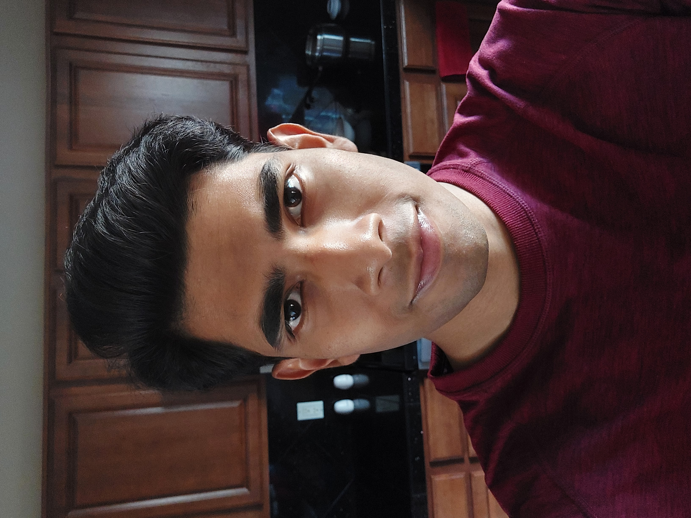

Resume

Summary
Challenge-driven Computer Science graduate who thrives in fast-paced, collaborative environments. Seeking a challenging position as a Software Engineer. Eager to apply my expertise in Python, Java, C/C++ in an Agile development environment.
Education
-
University of Arizona (2018-2023)
- Cumulative GPA: 3.29 / 4.00
- Bachelor of Science in Computer Science
- Minor in Electrical and Computer Engineering
- Minor in Information Science, Technology, and the Arts
Experience
-
Data Analyst Intern, Institutional Knowledge Map (KMAP), University of Arizona
05 / 2022 - 12 / 2022
- Contributed to the data collection process at the University of Arizona’s KMAP organization.
- Automated a complex pipeline involving - scraping data off of news articles, government databases, etc., then filtering only the relevant information for display on KMAP‘s web interface, before automatically storing them on MongoDB.
- Researched various algorithms and developed a custom name-matching algorithm tailored towards human names, which yielded results with greater than 99% accuracy, and significantly sped up a job that was previously done manually. Worked with data analysis and NLP tools such as Pandas, SpaCy, etc.
-
JavaFX App Development, University of Arizona Computer Science
02 / 2022 - 03 / 2022
- Develop a JavaFX application with a small team.
- Worked in an Agile development environment and used various structural and architectural design patterns to develop a Stomachion application.
- Worked with GitHub, JavaDoc, JUnit Testing, UML Documentation etc. in a strict and disciplined development cycle.
-
Game Development, University of Arizona School of Information
01 / 2022 - 05 / 2022
- Developed 2 games with a team over the course of a semester.
- Responsible for developing most of the code, as well as some of the assets.
- Worked with C#, .NET Framework, Unity, and PlasticSCM version control.
Skills
- Languages: Python, Java, C/C++, C#, Haskell, Prolog, R, Ruby.
- Environments: GNU/Linux, VS Code, Git/GitHub, Bash, MongoDB, Unity, Pandas, SpaCy.
- Transferrable: Problem-solving, Critical Thinking, Communication, Leadership, Coordination.
Links